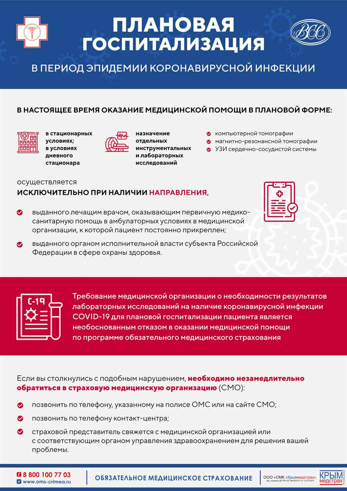

В ГБУЗ РК «Симферопольская ЦРКБ» открыта «горячая линия» для лиц, прибывших из-за границы и регионов РФ.
Обратиться можно по телефону: +7(978)-941-52-55
ГОРЯЧАЯ ЛИНИЯ МИНИСТЕРСТВА ЗДРАВООХРАНЕНИЯ РЕСПУБЛИКИ КРЫМ ПРЕДОСТАВЛЯЕТ КОНСУЛЬТАЦИИ О МЕРАХ ПРОФИЛАКТИКИ НОВОЙ КОРОНАВИРУСНОЙ ИНФЕКЦИИ (COVID-19)
Для получения информации можно обратиться на следующие номера телефонов:
с мобильного телефона 8 800 733 33 34 ; 8 800 733 33 12 (в выходные дни с 8:00 до 20:00);
со стационарных телефонов 0 800 733 33 34 ; 0 800 733 33 12.
